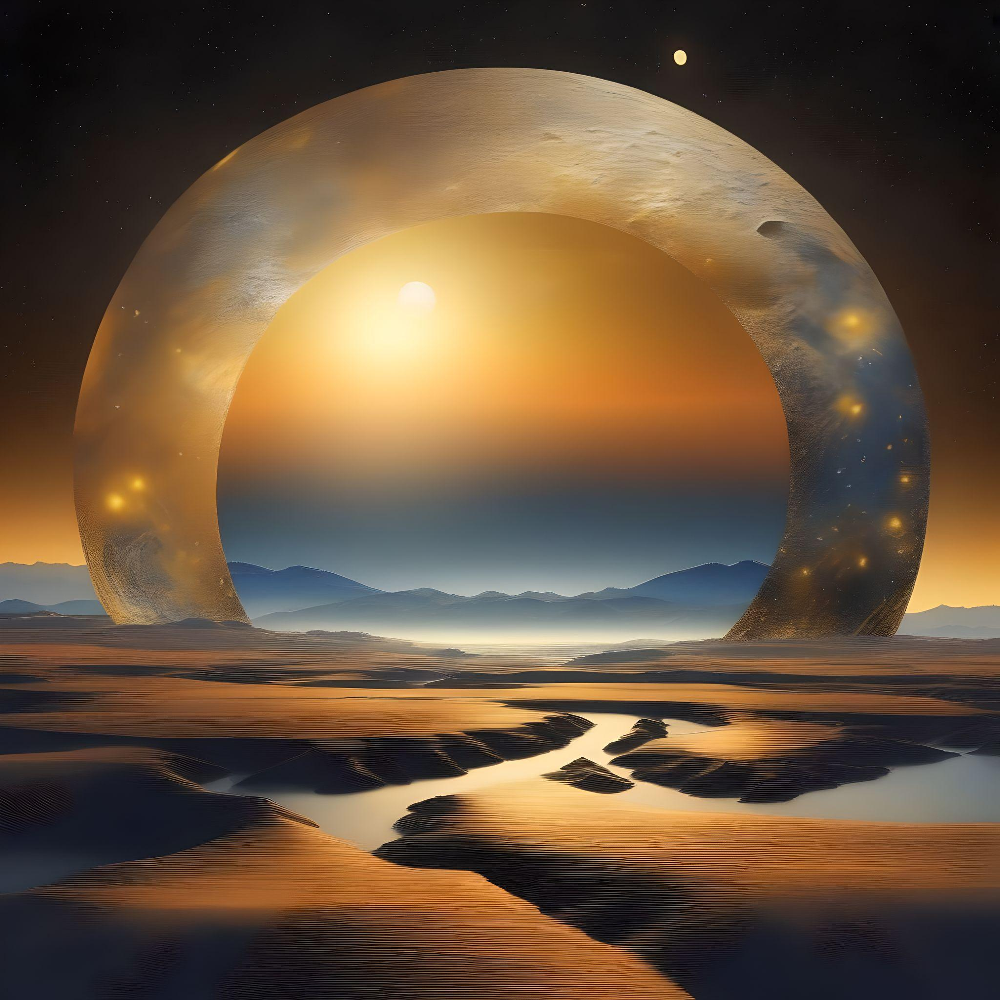
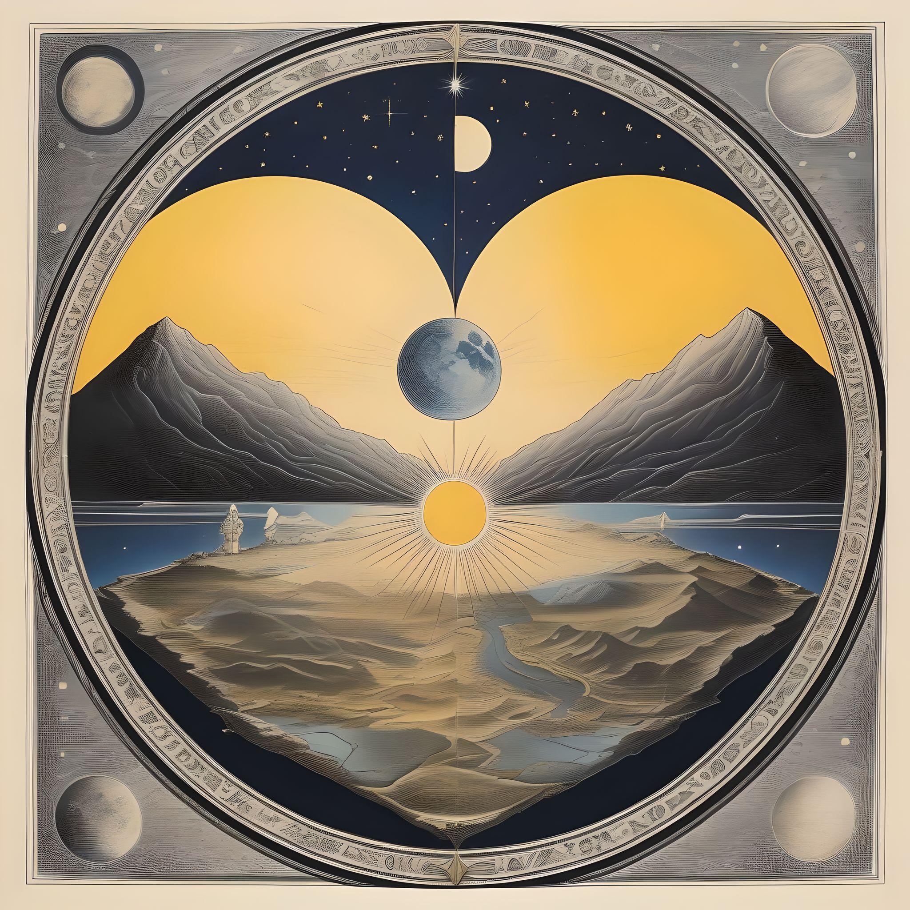

Devaneio
Capítulo 2
Capítulo 2
Uma vez que não se entendiam de forma escrita, eles tiveram a ideia
de simplificar como se comunicavam já que eles queriam muito
conhecer mutualmente um ao outro, vários dias se passaram e os dois ficaram cada
vez mais e mais próximos um do outro, pois apesar de estarem separados
por uma vontade divina, eles conseguiram estabelecer uma conexão que
desafiava as leis do próprio universo em que viviam. Depois de tantas
tardes compartilhando de seus mundos, suas ideias, e sentimentos que
jamais imaginaram compartilhar com alguém algum dia. Eles rapidamente
perceberem que haviam acendido uma faísca, tão linda quanto perigosa,
tanto delicada quanto mortal, que tanto os fazia se sentirem bem da
mesma forma que os assustavam, eles haviam descoberto a mais pura e
sincera forma de amar, o amor em toda a sua essência, algo que não
respeita limites ou padrões, mas apenas a vontade de dois seres de
ficarem juntos.
Então, Sunset e Moonlight começaram a se perguntar em suas mentes
se algum dia os dois poderiam de fato estar juntos, eles colocavam as
suas mãos uma ao lado da outra até o limite através do gramado daquele muro,
com a mais intensa vontade de estarem lado a lado ao se olharem com imensa
paixão, enquanto lágrimas solitárias desciam sobre suas bochechas logo
antes de caírem e secarem no gramado, eles se perguntavam o motivo
dos seres celestiais terem feito isso com eles, o motivo do mundo
ser um lugar tão injusto a ponto de fazer com que dois serem que pela
primeira vez em toda a sua vida, encontraram um motivo, uma razão para
seguir lutando todo dia, estarem incapazes de alcançar a única coisa
no mundo que os fazia bem.
Decididos a estarem juntos, e sendo provavelmente as duas mentes mais brilhantes daquela terra, os dois resolveram juntar esforços para que possam chegar a algum tipo de conclusão, ou forma de derrubar aquela barreira que foi declarada inimigo número um do amor que aqueles dois sentiam um pelo outro. Eles gastaram dias buscando, analisando, e de certa forma estudando delicadamente aquela barreira de todas as formas que podiam, visto que os demais objetos da natureza podiam passar de forma livre por aquele muro, mas por algum motivo celestial aqueles seres nunca poderiam fazer tal coisa. Parecia que cada passo dado na direção de uma resposta, resultava em dois passos mais longe de uma resposta certa para aquela questão em seus estudos, o que por muitas vezes fez com que eles ficassem de certa forma esgotados e cansados de buscar por algo que simplesmente não poderia ser explorado ou vencido, acho que esse sentimento é um pouco comum para nós. Buscar por algo maior e lutar como podemos para conseguir aquilo, ao mesmo tempo em que tudo ao redor parece te julgar e dificultar o seu caminho, mas a verdade é que a maioria das coisas do universo está totalmente fora do nosso controle, isso é simplesmente frustrante, mas não é motivo para somente desistir de continuar avançando, por isso Sunset e Moonlight sempre acordavam com um sorriso no rosto, usando aquela chama de combustível e lutando para descobrir alguma razão para aquilo tudo.
Certo dia, já totalmente esgotados, mas ainda com esperança, os dois se aproximaram daquela barreira que era demarcada por uma fina linha branca no chão, e se olharam lentamente enquanto o sol descia de forma linear pelo horizonte, e deram o seu último sorriso. Ao olharem bem um para o outro, eles perceberam que não iam mais obedecer de nenhuma forma aquela ordem natural que o mundo tanto forçava aquelas duas almas a seguir, decidiram que já haviam roubado deles a única coisa que um dia já havia feito sentido, ter uma ao outro. Em um ato de coragem, logo após seu último sorriso, Moonligth levantou seus cinco dedos no alto, e imediatamente Sunset entendeu que aquilo seria como uma contagem regressiva final, conforme os dedos eram abaixados um por um, os dois lembravam de todos aqueles dias que passaram juntos e de como odiavam aquela barreira, e de como só tinham a agradecer pelos últimos e melhores dias de suas vidas. Quando o último dedo havia sido abaixado, os dois fecharam os olhos e correram na direção um do outro, quando de repente sentiram algo totalmente diferente, uma sensação nunca vista, como se estivessem fora de si e de seus próprios corpos, até chegar a conclusão de que haviam sido apagados da existência e estavam no lar dos celestiais aonde iriam ali descansar por toda a eternidade. Mas ao abrirem os olhos, ambos perceberam que, na verdade, os seus lábios haviam se tocado e que eles não estavam em outro plano, mas que tinham acabado de experimentar o beijo mais puro e verdadeiro jamais antes dado em todos os universos, enquanto todos os outros seres os olhavam com espanto, eles derramavam lágrimas e sorriam alegremente por que finalmente eles tinham entendido tudo e agora poderiam viver juntos pelo resto de suas vidas.

A verdade é que nunca existiu uma muralha, o tempo todo essa muralha
só existia dentro de suas próprias cabeças, construída pedra por pedra
pelo medo, pelo receio e pela frustração. Aqueles que nunca tentaram
de verdade antes, fizeram uma muralha para que assim como eles, os
outros também não fossem capazes de conseguir, pois a verdade é que
se torna muito mais fácil nem tentar. A única muralha que realmente
existe é aquela que criamos em nossas mentes como uma desculpa para
não nos esforçarmos verdadeiramente por aquilo que tanto queremos para o
nosso futuro.
Sobre o restante da história? Eu prefiro, na verdade, te
presentear com uma pergunta; É melhor encarar as nossas muralhas como
um problema ou uma barreira celestial, ou simplismente aceitar que são frutos de
nossos medos e aprender que o importante não é a muralha em si, mas o
modo como deixamos ela nos afetar e o modo como podemos crescer muito mais
alto do que ela? A resposta está aí dentro de você em algum lugar, mas
a partir daqui começa um caminho de mão única que só podemos de fato
percorrer sozinhos.